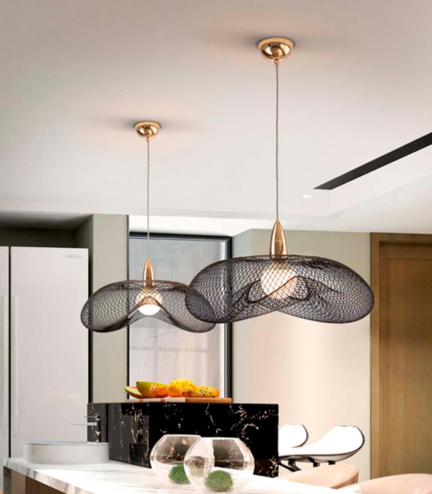

Cada estilo de lámpara ofrece una estética única y puede contribuir a crear una atmósfera distintiva en tu hogar. ¡Elige el que mejor se adapte a tu gusto personal y al ambiente que deseas crear!
Lámparas Vintage

Inspiradas en estilos de diseño del pasado, las lámparas vintage añaden un toque de nostalgia y encanto a cualquier espacio. Estas lámparas suelen presentar detalles ornamentados, acabados envejecidos y materiales como el latón, el bronce y la madera oscura. Desde lámparas de araña elegantes hasta lámparas de mesa retro, el estilo vintage ofrece una amplia variedad de opciones para aquellos que desean agregar un toque de historia y carácter a su hogar.
Lámparas Modernas

Las lámparas modernas se caracterizan por líneas limpias, formas geométricas y materiales contemporáneos como el metal, el vidrio y el plástico. Estas lámparas suelen tener un diseño minimalista y funcional, con una estética que se adapta bien a espacios modernos y de estilo urbano. Las lámparas modernas son ideales para aquellos que buscan una iluminación elegante y actualizada que se integre perfectamente con la decoración contemporánea.
Lámparas Rústicas

Las lámparas rústicas evocan la calidez y la simplicidad de la vida en el campo, con diseños que incorporan elementos naturales como la madera, el hierro forjado y el mimbre. Estas lámparas a menudo presentan detalles inspirados en la naturaleza, como ramas, hojas o motivos florales. Las lámparas rústicas son perfectas para crear una atmósfera acogedora y relajada en cualquier espacio, ya sea una cabaña en la montaña o un loft en la ciudad.
Lámparas Industriales
Inspiradas en la estética de las antiguas fábricas y almacenes, las lámparas industriales se caracterizan por su robustez, funcionalidad y aspecto utilitario. Estas lámparas suelen estar hechas de materiales como el metal, el hormigón y el vidrio esmerilado, con acabados en tonos oscuros y detalles como jaulas metálicas o tuberías expuestas. Las lámparas industriales son ideales para espacios de estilo loft o almacén, donde añaden un toque de autenticidad y carácter urbano.